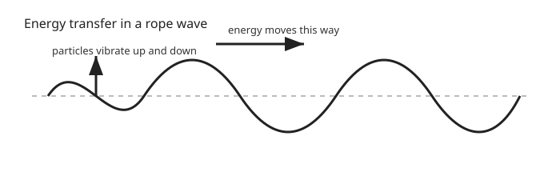
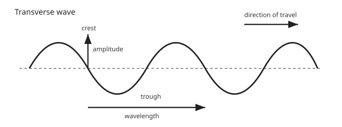
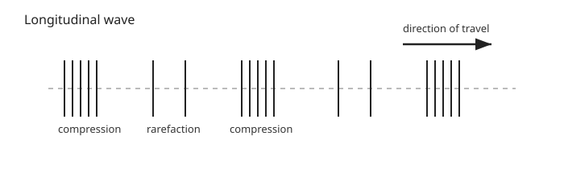
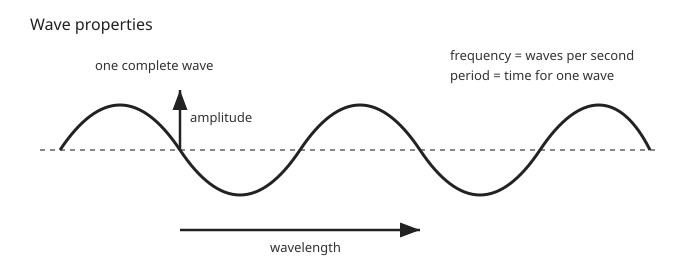
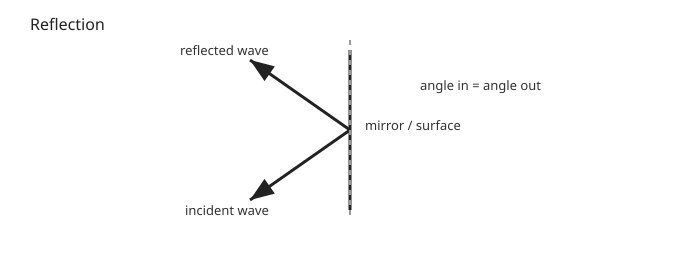
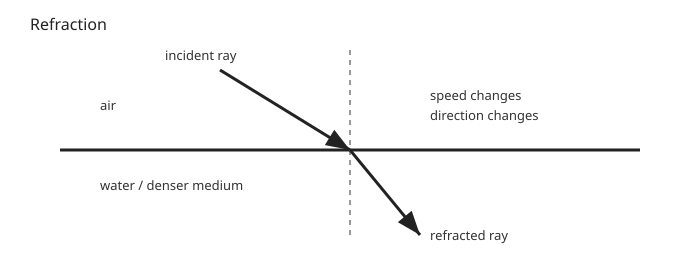

GCSEs for Dads – Physics 6: Waves
Don’t worry about reading the formulas now. Just know they’re here at the top if you need them. Scroll down to start.
You don’t need to memorise these formulas. Just know where to find them.
Waves Formulas
| Quantity | Formula | Meaning |
|---|---|---|
| Wave speed | v = f × λ | wave speed = frequency × wavelength |
| Period | T = 1 / f | time taken for one wave |
| Wave speed | v = distance ÷ time | used when measuring waves travelling a distance |
Symbols and Units
| Symbol | Meaning | Unit |
|---|---|---|
| v | Wave speed | m/s |
| f | Frequency | Hertz (Hz) |
| λ | Wavelength | metres (m) |
| T | Period | seconds (s) |
Physics 6: Waves
1. The Big Idea (30 seconds)
- A wave transfers energy from one place to another.
- A wave does not transfer matter overall.
- In many waves, particles just vibrate around a fixed position.
- The energy moves through the medium, not the material itself.

Think of it like this:
If you flick one end of a rope, the shape moves along the rope, but the rope itself does not travel from your hand to the other end.
2. Types of Wave
There are two main types you need to know.
Transverse waves
- Vibrations are perpendicular to the direction of travel.
- That means the wave moves one way, while the particles move at right angles to it.
- Examples include:
- water surface waves
- light waves
- all electromagnetic waves

Key parts: - crest = highest point - trough = lowest point - wavelength = distance from one crest to the next crest
Longitudinal waves
- Vibrations are parallel to the direction of travel.
- That means the particles move back and forth in the same direction the wave travels.
- Main example: sound waves

Key parts: - compression = particles close together - rarefaction = particles spread apart
3. Wave Properties
All waves have a few core properties you need to recognise.
Amplitude
- The maximum displacement from the middle position.
- Bigger amplitude usually means more energy.
- In sound, bigger amplitude means louder sound.
Wavelength (λ)
- The distance between two matching points on a wave.
- Usually measured crest to crest, trough to trough, or compression to compression.
Frequency (f)
- The number of complete waves passing a point each second.
- Measured in Hertz (Hz).
Period (T)
- The time taken for one complete wave.
- Measured in seconds.
Frequency and period relationship
- High frequency means short period.
- Low frequency means long period.

4. Wave Speed
Wave speed tells us how fast a wave travels.
Formula
v = f × λ
Where: - v = wave speed in m/s - f = frequency in Hz - λ = wavelength in m
Worked example
A wave has: - frequency = 4 Hz - wavelength = 2 m
So:
v = f × λ
v = 4 × 2
v = 8 m/s
The wave travels 8 metres each second.
Typical wave speeds
- sound in air ≈ 340 m/s
- sound in water ≈ 1500 m/s
- light in vacuum ≈ 3 × 10⁸ m/s
5. Reflection
Reflection happens when a wave bounces off a surface.
Examples: - light reflecting in a mirror - sound echoing off a cliff or wall
Rule of reflection
Angle of incidence = angle of reflection
Important facts: - the direction changes - the frequency stays the same
Reflection is used in: - mirrors - echo sounding - ultrasound imaging

6. Refraction
Refraction happens when a wave enters a different medium and changes speed.
Examples: - light moving from air into water - water waves moving into shallow water
Key facts: - wave speed changes - wavelength changes - frequency stays the same
Because the wave changes speed, it often changes direction too.
A classic example is a straw looking bent in a glass of water. That is light being refracted.

7. Sound Waves
Sound waves are longitudinal waves.
They can travel through: - solids - liquids - gases
They cannot travel through a vacuum because there are no particles to vibrate.
Speed of sound
Sound travels: - slowest in gases - faster in liquids - fastest in solids
Sound wave properties
- amplitude links to loudness
- frequency links to pitch
Real life example
You see lightning before you hear thunder because light travels much faster than sound.
8. Check Your Understanding
- What does a wave transfer? (energy)
- Why does a wave not transfer matter overall? (the particles only vibrate or oscillate around fixed positions)
- What is the difference between transverse and longitudinal waves? (transverse waves vibrate at right angles to the direction of travel, longitudinal waves vibrate in the same direction)
- What does wavelength measure? (the distance between two matching points on a wave)
- What does frequency measure? (the number of complete waves passing a point each second)
- What happens to wavelength when a wave enters a different medium? (it changes if the wave speed changes)
- Why can sound not travel through space? (there are no particles in a vacuum to vibrate)
- What does amplitude tell you about a sound wave? (its loudness)
- What does frequency tell you about a sound wave? (its pitch)
9. Quick Memory Hooks
- wave = energy moves
- transverse = vibrations at right angles
- longitudinal = vibrations in the same direction
- amplitude = height / energy
- frequency = waves per second
- wavelength = length of one wave
- reflection = bounce
- refraction = change of speed and direction
10. Common Traps
- Thinking waves carry matter from one place to another
- Mixing up wavelength and amplitude
- Forgetting that frequency stays the same during refraction
- Forgetting that sound is longitudinal
- Forgetting that sound cannot travel through a vacuum